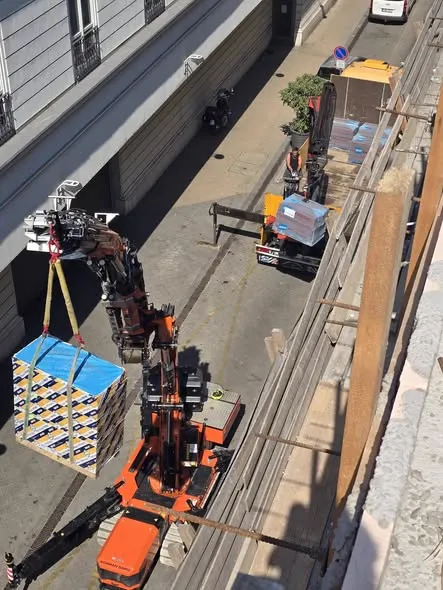

Helyreállítás előtt
Ugyanaz a homlokzat, ugyanabból a nézőpontból. Görgessen, és a fény végigmegy rajta, ahogy a munka is végigment.
Helyreállítás után
Oldalak
Főoldal Mit építünk Foghíjbeépítés Műemlék és homlokzat Hogyan építünk Referenciák Számok Rólunk KapcsolatElérhetőség
+36 70 403 7217Főoldal/ Mit építünk/ Műemlék és homlokzat
Védett homlokzaton az a kérdés dönt, hogy mit hagyunk meg. Restaurátori kutatással kezdünk, sablonnal pótolunk, és az állványt úgy építjük, hogy alatta közben él az utca.
Helyreállítás előtt
Ugyanaz a homlokzat, ugyanabból a nézőpontból. Görgessen, és a fény végigmegy rajta, ahogy a munka is végigment.
Helyreállítás után
01 / A falszövet
Az 1838-as nagy pesti árvíz után a belváros jó részét újra kellett rakni. A mai zártsorú falszövet nagyrészt akkor keletkezett: tömör tégla, mészhabarcs, lefelé szélesedő falazott alap, dilatáció nélkül. Ami akkor lakóház volt, az ma védett érték, sok helyen a tagozataival, a kapualjával és a színrétegeivel együtt.
Egy ilyen fal másképp visel terhet, mint egy vasbeton váz. A teher a falsíkban vándorol, a nedvesség kapillárisan jön föl, a só a vakolat alatt kristályosodik. Ezért a homlokzat nálunk nem a bontással kezdődik, hanem a méréssel: nedvességtartalom, sótartalom, kopogtatásos üregvizsgálat, és a szomszédos épületek állapotfelvétele még a munkaterület átvétele előtt.
A védettség nem lassítja a projektet, ha időben kezeljük. Az örökségvédelmi eljárás átfutását betervezzük az ütemtervbe, a kutatási dokumentáció pedig a tervezéssel párhuzamosan készül. Így az engedélyre nem a beállt állvány alatt várunk.
Épületenként újramérve

Négy szakasz. Az elsőben nem dolgozunk a falon, csak megismerjük. A többi ebből következik, nem árlistából.
01 / Kutatás
Kutatóablakok a vakolaton, színrétegvizsgálat a rétegsor korára, kopogtatás az üregekre. Innen derül ki, mi eredeti, mi a hatvanas évek pótlása, és mi az, ami már csak festék.
02 / Tagozat
A megmaradt párkányról és ablakkeretről mintát veszünk, sablont készítünk, és a tagozatot a helyszínen húzzuk újra. A gyári polisztirol profil nem alternatíva, mert se anyagában, se élében nem azonos.
03 / Anyag
A követ nem cseréljük, ha konzerválható: kíméletes tisztítás, sópakolás, kőkiegészítés a saját anyagával. A vakolatpótlás mészhabarccsal készül, hogy a fal továbbra is ki tudja engedni a nedvességet.
04 / Állvány
Az állvány védőtetővel és hálóval indul, mert alatta él a gyalogosforgalom. Az emeléseket előre engedélyezett napokra ütemezzük, a lakók a saját kapujukon járnak be a munka teljes ideje alatt.
Műemléki munkán a kivitelező egy név a sok közül. A többit nem a projekt közepén keressük meg: ugyanazokkal dolgozunk, akiknek a neve az engedélykérelmen is szerepel.

A részlet
A tagozat nem dísz. Vízelvezetés.
Egy párkány kiülése, egy könyöklő lejtése, egy övpárkány orra mind azért van, hogy a csapóeső ne a falsíkon fusson le. Ha a felújításnál ez a geometria elveszik, a homlokzat két télen belül újra ázni kezd, akármilyen festék került rá.
Ezért mérjük vissza a régi profilt, ezért készül sablon minden ismétlődő tagozathoz, és ezért van a kutatási jegyzőkönyvben fotó minden mintavételi pontról.
Összeállítás alatt
A részletes adatokat a következő frissítéssel tesszük közzé. Kérésre addig is átküldjük.
Projekt-egyeztetés
Két munkanapon belül visszaírjuk, milyen kutatás kell hozzá, mekkora örökségvédelmi átfutással számoljon, és nagyságrendileg mit visz el az állványzat.
Amit egyeztetés előtt elküldünk